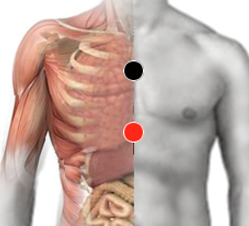

Proteus Mirabillis
mediastino - mediastino
sacro - sacro
cápsula renal - cápsula renal
dorso - dorso
peroné - peroné
mediastino - mesocardio
costal - costal

Generalidades:
Produce lupus eritematoso sistémico . Insuficiencia renal. Pigmentación en la cara en forma de mariposa presente en el síndrome de Ingrid y asociado al virus de la Varicela y al parasito Blastocistis Hominis.
Cuando se localiza en el Sacro produce: irritación Infección de vías urinarias y degeneración de la cola de caballo (10ª dorsal hacia abajo), Infertilidad, problemas musculares en movimientos y articulaciones de los miembros inferiores, Dolores o paraestesias. Inflamación de órganos sexuales, Insuficiencia renal.
Cuando se localiza en Mediastino da Mediastinitis con síntomas laríngeos, pulmonares, bronquiales y cardiacos. Da Falso VIH-Sida al combinarse con otro Virus. Pues atrapa al timo tanto energética como funcionalmente. Intolerancia a la lactosa. En niños checar par cóccix-cóccix.
Bacteria anaerobea que habita normalmente en los intestinos, cuando se sale de control puede causar varias infecciones, con frecuencia en vías urinarias. El Proteus Mirabilis causa el 90% de las infecciones por proteus.
Esta bacteria de colonias redondeadas tiene la habilidad de producir grandes niveles de ureasa. La ureasa hidroliza urea a amoníaco, (NH3) y eso hace a la orina más alcalina. Y al subir la alcalinidad puede liderar la formación de cristales de estruvita, carbonato de calcio, y/o apatita. Esta bacteria puede encontrarse en cálculos, y esas bacterias escondidas allí, pueden reiniciar una infección post tratamientos antibióticos.
Transmisión
Algunas mujeres o bebés se pueden infectar por tener una uretra muy corta, da cistitis (inflamación de la vejiga) también puede transmitirse por contacto sexual.